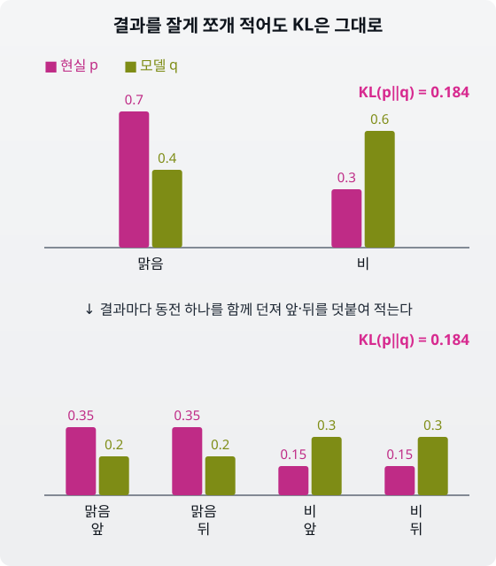
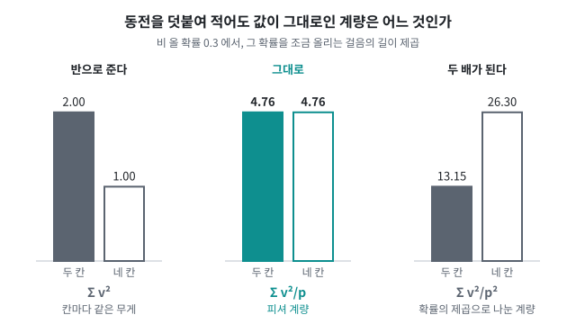
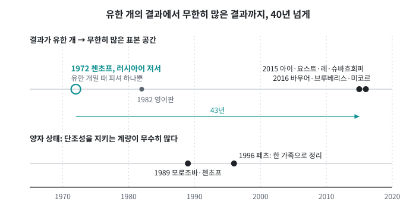
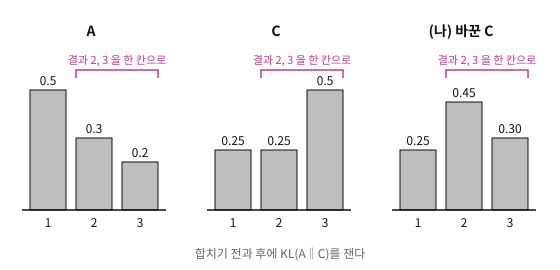
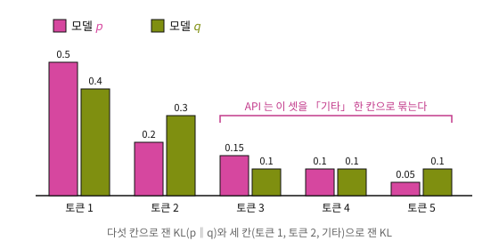

KL, 브레그만, 피셔는 두 분포가 아주 가까울 때 모두 피셔 계량으로 모였지만, ML에서는 거리를 재는 방법을 고르는 일이 흔하다. 파라미터 두 벌이 얼마나 다른지를 숫자 차이의 제곱합으로 잴 수도 있고, 출력 분포 사이의 KL로 잴 수도 있다. 분포 사이의 작은 걸음을 재는 계량도 피셔 말고 다른 것을 골랐으면 어땠을까? 앞 절의 등식들이 그대로 성립했을까, 아니면 애초에 고를 수 있는 계량이 하나뿐이었을까?
기록을 잘게 쪼개 적기
계량을 고르는 기준부터 하나 세워 보자. 날씨 기록을 두 분포로 비교한다. 현실은 p = (맑음 0.7, 비 0.3), 모델은 q = (맑음 0.4, 비 0.6)이다. KL(p‖q) = 0.7 log(0.7/0.4) + 0.3 log(0.3/0.6) = 0.184다.
이제 기록하는 사람이 날마다 날씨 옆에 동전을 하나 던져 앞·뒤를 함께 적는다고 하자. 결과는 넷(맑음·앞, 맑음·뒤, 비·앞, 비·뒤)이 되고, 두 분포는 p = (0.35, 0.35, 0.15, 0.15), q = (0.2, 0.2, 0.3, 0.3)이 된다. 동전은 날씨와 상관이 없으니, 이 기록은 두 분포를 가르는 단서를 하나도 더하지도 빼지도 않았다. 실제로 계산해 보면 KL은 그대로 0.184이고, 작은 걸음을 재는 피셔 계량도 변하지 않는다. 비 올 확률을 0.3으로 둔 날씨 기록에서 피셔 정보는 1/(0.3 × 0.7) = 4.76이고, 동전을 덧붙인 네 칸 기록에서도 4.76이다.

결과를 잘게 쪼개 적어도 KL은 그대로: 위는 맑음·비 두 칸의 현실 p (0.7, 0.3)와 모델 q (0.4, 0.6), 아래는 결과마다 동전 앞·뒤를 덧붙인 네 칸 (0.35, 0.35, 0.15, 0.15)와 (0.2, 0.2, 0.3, 0.3). 두 경우 모두 KL(p‖q) = 0.184
확률을 다른 결과들 위로 옮겨 적는 변환을 통틀어 마르코프 사상이라고 부른다(「사상」은 수학에서 변환을 부르는 말이다). 칸을 합쳐 적는 것처럼 정보를 잃는 것도 있고, 동전을 덧붙여 잘게 쪼개 적는 것처럼 잃지 않는 것도 있다. 잃지 않는 옮기기는 같은 자료를 다르게 적은 것뿐이니, 계량이 공정하다면 이런 옮기기를 거쳐도 값이 변하지 않아야 한다.
「정보를 잃지 않는 옮기기를 거쳐도 값이 변하지 않는다」는 조건 하나만 걸면 계량은 몇 개나 남을까? 결과가 유한 개인 경우에 답이 나와 있다. 정보를 잃지 않는 옮기기를 거쳐도 변하지 않는 계량은, 상수배를 빼면 피셔 계량 하나뿐이다. 이것을 첸초프(Chentsov)의 정리라고 부르는데, 이 정리에 따르면 피셔를 고른 것은 취향이 아니었다. 「같은 자료를 다르게 적어도 같은 값을 내라」는 요구를 받아들이는 순간 고를 것이 하나만 남는다.
이 절의 결론
“결과를 잘게 쪼개 적어도 값이 변하지 않아야 한다는 조건 하나가, 작은 걸음을 재는 계량을 피셔 계량 하나로 좁힌다.”
인물 이야기: Nikolai Chentsov와 “유일성의 증명”
니콜라이 니콜라예비치 첸초프(Николай Николаевич Ченцов, 1930–1992)는 모스크바에서 확률론과 수리통계를 연구한 수학자였다. 1960년대 중반부터 그는 통계적 추론을 마르코프 사상(확률을 다른 결과 위로 옮겨 적는 변환)들의 틀로 묶어 보는 작업을 내놓았다.
그가 붙든 물음은 이것이었다. 확률분포의 공간에 "거리"를 정하려면 리만 계량(점마다 작은 걸음의 길이를 재는 규칙을 하나씩 붙인 것)을 하나 고르면 되므로, 그 방법은 무한히 많다. 그런데 어떤 계량을 골라야 하는가? 취향의 문제인가, 아니면 자연스러운 선택이 있는가?

계량 후보 셋을 본문의 날씨 기록(비 올 확률 0.3)과 동전을 덧붙인 네 칸 기록에 걸어 보면, 칸마다 같은 무게로 더하는 Σ v²는 2에서 1로 반이 되고 확률의 제곱으로 나누는 Σ v²/p²는 13.15에서 26.30으로 두 배가 되지만, 피셔 계량 Σ v²/p만 4.76에서 변하지 않는다. 왼쪽과 오른쪽 후보는 비교를 위해 이 책이 고른 보기이고, 값은 이 책에서 계산해 그렸다(sources/13-전체지도/fig_chentsov.py)
그의 답은 정보를 잃지 않는 옮기기에 대해 변하지 않는 계량은 피셔 계량뿐이라는 것이었다. 이 유일성 정리는 1972년 모스크바의 나우카 출판사에서 나온 저서 『통계적 결정 규칙과 최적 추론』에 실렸다. 러시아어로. 미국수학회의 영어 번역(Statistical Decision Rules and Optimal Inference)은 1982년에야 나왔다.
"왜 피셔 정보가 자연스러운 계량인가"라는 물음의 답이 오늘날 "첸초프의 정리(Čencov’s theorem)"라고 불리는 바로 이 정리다. 이 교재에서 피셔 정보가 거리를 재고, 곡률을 정의하고, 사영의 직교를 재는 자리를 차지하는 것의 수학적 근거가 여기에 있다.
이 정리에는 뒷이야기가 둘 있다. 하나는 정보를 뭉개는 변환을 거치면 거리가 줄어들어야 한다는 “단조성” 조건으로 바꿔 말한 버전이다. 고전 확률에서는 이것도 피셔를 가리키지만, 양자 상태의 공간으로 가면 단조성 조건을 만족하는 계량이 무수히 많다. 모로조바(Morozova)와 첸초프가 그 후보들을 연구했고, 페츠(Petz)가 1996년에 그것들을 한 가족으로 정리했다. 다른 하나는 무한차원이다. 결과가 무한히 많은 표본 공간으로의 확장은 2010년대 중반, 아이(Ay)·요스트(Jost)·레(Lê)·슈바흐회퍼(Schwachhöfer)와 바우어(Bauer)·브루베리스(Bruveris)·미코르(Michor)가 해냈다. 결과가 유한 개인 경우에 대한 첸초프의 증명이 무한차원까지 넓어지기까지 40년 넘게 걸렸다.

첸초프의 유일성 정리가 나오고 넓어진 연표: 1972년 러시아어 저서에서 결과가 유한 개일 때 피셔 계량 하나뿐임을 보였고 영어판은 1982년에 나왔다. 무한히 많은 표본 공간으로 넓힌 것은 2015년 아이·요스트·레·슈바흐회퍼와 2016년 바우어·브루베리스·미코르로 43년 뒤다. 아래 줄의 양자 상태에서는 1989년 모로조바·첸초프가 단조 계량의 후보들을 연구했고 1996년 페츠가 한 가족으로 정리했다. 연도는 각 논문의 서지에서 가져와 이 책에서 그렸다(sources/13-전체지도/fig_chentsov.py)
첸초프의 작업에는 계량뿐 아니라 접속(무엇을 곧은 길로 볼지 정하는 규칙)에 대한 결과도 있었다. 같은 불변성 조건을 만족하는 접속들은 숫자 α 하나로 이어진 가족을 이룬다는 것이다. 이 가족은 첸초프와 아마리(Amari)가 따로따로 찾았고, 아마리는 1980년대에 이것을 쌍대 접속의 구조로 발전시켰다. 오늘날 α-접속이라 부르는 것이다.
첸초프는 1992년에 세상을 떠났다. 그의 이름은 서방에서 Čencov, Chentsov, Cencov 등 여러 철자로 표기되어 검색조차 어렵다. 이 장이 "전체 지도"라면, 그 지도에서 거리를 재는 계량이 피셔 하나뿐임을 증명한 사람이 첸초프다.
김민준
피셔 계량이 조건을 지킨다는 건, 동전을 덧붙인 날씨 기록에서도 4.76이 그대로인 걸로 바로 확인되잖아요. 다른 계량도 몇 개 넣어 보고 안 되면 끝 아니에요?
선생님
피셔가 조건을 지키는지 보는 건 그렇게 하면 돼요. 그런데 첸초프의 정리가 말하는 건 무엇이었죠?
이서연
피셔 「하나뿐」이라는 거요. 리만 계량은 고를 수 있는 게 무한히 많다고 했으니까, 몇 개 넣어 보는 걸로는… 안 되겠네요. 떠올리지 못한 계량은 시험해 볼 수도 없어요.
선생님
그래서 후보를 하나씩 시험하는 대신, 조건 하나가 계량의 모양을 어디까지 묶는지를 따져야 했어요. 결과가 유한 개일 때 첸초프가 끝낸 그 일을 결과가 무한히 많은 경우로 넓히는 데는 40년 넘게 걸렸고요.
김민준
증명이 나오고도 그 증명을 읽은 사람은 적었겠네요. 1972년 책이 러시아어였고 영어판은 1982년에 나왔다면서요.
이서연
이름 철자도 Čencov, Chentsov, Cencov로 제각각이라 지금도 검색조차 어렵다고 했어. 번역이 없던 10년 동안은 러시아어를 못 읽는 연구자가 이 정리가 있다는 것부터 알기 어려웠겠다.
김민준
그런데 쪼개 적을 때 피셔가 그대로인 건 봤는데, 거꾸로 칸을 합쳐 적으면 피셔나 KL은 어떻게 돼요? 그대로예요, 줄어요?
정리가 말하는 「정보를 잃지 않는 옮기기」를 거꾸로 돌리면 칸 합치기다. 합치기가 KL 값에 어떻게 드러나는지 숫자로 확인하자.
문제 7. 뭉개면 줄어든다
A = (0.5, 0.3, 0.2), C = (0.25, 0.25, 0.5)에서 결과 2와 3을 하나로 합친다. (가) 합치기 전과 후의 KL(A‖C)를 비교하라. (나) C를 (0.25, 0.45, 0.30)으로 바꾸면 어떻게 되는가? 합쳐도 KL이 줄지 않는 조건은? (다) 이것이 첸초프의 정리와 어떻게 이어지는가?

A = (0.5, 0.3, 0.2), C = (0.25, 0.25, 0.5), (나)의 바꾼 C = (0.25, 0.45, 0.30)의 막대. 세 경우 모두 결과 2와 3을 한 칸으로 묶는 괄호가 있다
함께 풀기
김민준
계산부터 했어요. 합치기 전 0.218, 합친 뒤 (0.5, 0.5)와 (0.25, 0.75) 사이 KL은 0.144예요.
선생님
줄었네요. 합친 뒤에 "결과 2였는지 3이었는지"를 물으면 답할 수 있어요?
김민준
없어요. 그게 버려진 정보예요. 두 분포를 가르던 단서 일부가 결과 2와 3을 합친 칸 안에 있었고요.
이서연
그럼 KL이 그대로인 건 A = C일 때뿐이겠네요. 버리는 정보가 늘 있으니까요.
선생님
(나)의 C로 해 봐요.
이서연
합치기 전 0.144, 합친 뒤 0.144… 같아요. A와 C가 다른데도요.
선생님
결과 2와 3 사이의 비율을 A와 C에서 각각 봐요.
이서연
A는 0.3 : 0.2, C는 0.45 : 0.30. 둘 다 3 : 2예요. 합친 칸 안에서 A와 C가 똑같이 나뉘니까, 결과 2와 3을 합친 칸 안에는 A와 C를 가를 단서가 애초에 없었어요. 버린 게 없으니 KL도 0.144로 같아요.
선생님
그게 "충분통계량"이에요. 합친 뒤의 결과가 두 분포를 가르는 데 충분하면 KL도 피셔도 그대로고, 아니면 줄어요. 첸초프는 거꾸로 물었어요. 이렇게 칸을 합치는 변환에 대해 변하지 않는 계량이 무엇이냐고. 답이 피셔 하나였고요.
김민준
편의점 매출표에서 삼각김밥과 줄김밥을 「김밥」 한 줄로 묶는 거랑 비슷하네요. 두 가게가 두 김밥을 같은 비율로 팔았으면 묶어도 두 가게를 가르는 데 잃는 게 없고, 비율이 달랐으면 그 차이를 잃어요.
문제 8. 상위 두 토큰만 알려 주는 API
두 언어 모델이 같은 문맥에서 다음 토큰 다섯 개에 준 확률이 p = (0.5, 0.2, 0.15, 0.1, 0.05), q = (0.4, 0.3, 0.1, 0.1, 0.1)이다. 어떤 API는 첫째·둘째 토큰의 확률만 알려 주고 나머지 셋은 「기타」 한 칸으로 묶는다. (가) 다섯 칸으로 잰 KL(p‖q)와 세 칸(첫째, 둘째, 기타)으로 잰 KL을 비교하라. (나) q의 셋째~다섯째 값을 어떻게 바꾸면 두 값이 같아지는가? (다) API로 잰 KL은 다섯 칸으로 잰 진짜 KL보다 늘 큰가, 작은가?

다섯 토큰에 두 모델 p = (0.5, 0.2, 0.15, 0.1, 0.05)와 q = (0.4, 0.3, 0.1, 0.1, 0.1)가 준 확률의 막대. 토큰 3~5 위에 API 가 「기타」 한 칸으로 묶는 괄호
함께 풀기
김민준
돌려 봤어요. 다섯 칸 0.0566, 세 칸 0.0305예요. 기타 칸은 p에서 0.15 + 0.1 + 0.05 = 0.3, q에서 0.1 + 0.1 + 0.1 = 0.3이라 묶음의 크기는 같은데, 반 가까이 줄었어요.